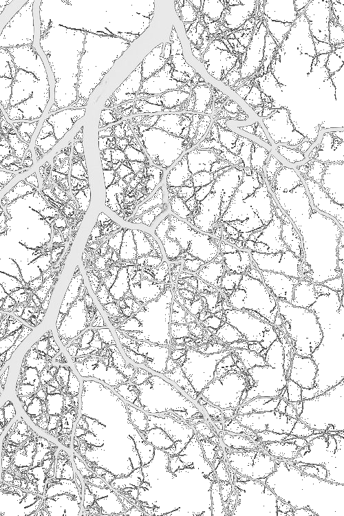
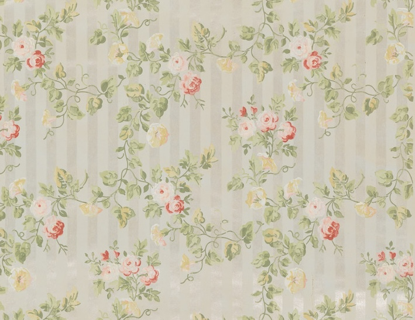
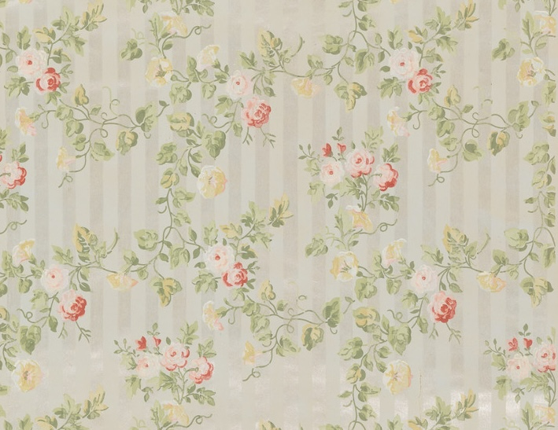

Early root growth is one of the functions of the apical meristem located near the tip of the root. The meristem cells more or less continuously divide, producing more meristem, root cap cells (these are sacrificed to protect the meristem), and undifferentiated root cells. The latter become the primary tissues of the root, first undergoing elongation, a process that pushes the root tip forward in the growing medium. Gradually these cells differentiate and mature into specialized cells of the root tissues.[14]
Growth from apical meristems is known as primary growth, which encompasses all elongation. Secondary growth encompasses all growth in diameter, a major component of woody plant tissues and many nonwoody plants. For example, storage roots of sweet potato have secondary growth but are not woody. Secondary growth occurs at the lateral meristems, namely the vascular cambium and cork cambium. The former forms secondary xylem and secondary phloem, while the latter forms the periderm.
In plants with secondary growth, the vascular cambium, originating between the xylem and the phloem, forms a cylinder of tissue along the stem and root.[citation needed] The vascular cambium forms new cells on both the inside and outside of the cambium cylinder, with those on the inside forming secondary xylem cells, and those on the outside forming secondary phloem cells. As secondary xylem accumulates, the "girth" (lateral dimensions) of the stem and root increases. As a result, tissues beyond the secondary phloem including the epidermis and cortex, in many cases tend to be pushed outward and are eventually "sloughed off" (shed).[citation needed]
At this point, the cork cambium begins to form the periderm, consisting of protective cork cells. The walls of cork cells contains suberin thickenings, which is an extra cellular complex biopolymer.[15] The suberin thickenings functions by providing a physical barrier, protection against pathogens and by preventing water loss from the surrounding tissues. In addition, it also aids the process of wound healing in plants.[16] It is also postulated that suberin could be a component of the apoplastic barrier (present at the outer cell layers of roots) which prevents toxic compounds from entering the root and reduces radial oxygen loss (ROL) from the aerenchyma during waterlogging.[17] In roots, the cork cambium originates in the pericycle, a component of the vascular cylinder.[17]
The vascular cambium produces new layers of secondary xylem annually.[citation needed] The xylem vessels are dead at maturity (in some) but are responsible for most water transport through the vascular tissue in stems and roots.
Tree roots at Port Jackson
Tree roots usually grow to three times the diameter of the branch spread, only half of which lie underneath the trunk and canopy. The roots from one side of a tree usually supply nutrients to the foliage on the same side. Some families however, such as Sapindaceae (the maple family), show no correlation between root location and where the root supplies nutrients on the plant.[18]

 
